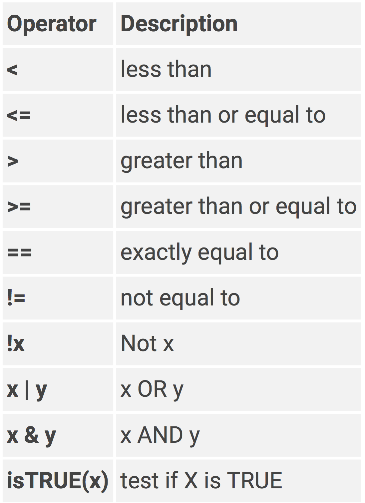

Chapter 2 Basic R
This chapter will cover the basics of how to assign values to objects, create and extract information from vectors, lists, and dataframes.
If you have not done so already, open a new R script file. To create a new R script go to
File -> New File -> R Script
This should have opened a blank Script window called Untitled.
The Script window is your workspace. This is where you will write, edit, delete, re-write, your code.
To follow along with the tutorial, you should type the lines of code I display in the tutorial into your script.
Go ahead and save your empty script as 2_basics.R
2.1 Creating R objects
In R, everything that exists is an object and everything you do to objects are functions. You can define an object using the assignment operator <-.
Everything on the left hand side of the <- assignment operator is an object. Everything on the right hand side of <- are functions or values. Go ahead and type the following two lines of code in your script
You can execute/run a line of code by placing the cursor anywhere on the line and press Ctrl + Enter. Go ahead an run the two lines of code.
In this example, the first line creates a new object called string with a value of “hello”. The second line simply prints the output of string to the Console window. In the second line there is no assignment operator. When there is no <- this means you are essentially just printing to the console. You can’t do anything with stuff that is just printed to the console, it is just for viewing purposes.
For instance, if I wanted to calculate 1 + 2 I could do this by printing it to the console
However, if I wanted to do something else with the result of that calculation then I would not be able to unless I assigned the result to an object using <-
The point is, you are almost always going to assign the result of some function or value to an object. Printing to the console is not very useful. Almost every line of code, then, will have an object name on the left hand side of <- and a function or value on the right hand side of <-
In the first example above, notice how I included " " around hello. This tells R that hello is a string, not an object. If I were to not include " ", then R would think I am calling an object. And since there is no object with the name hello it will print an error
Do not use " " for Numerical values
You can execute lines of code by:
Typing them directly into the Console window
Typing them into the Script window and then on that line of code pressing Ctrl+Enter. With Ctrl+Enter you can execute one line of your code at a time.
Clicking on Source at the top right of the Script window. This will run ALL the lines of code contained in the script file.
It is important to know that EVERYTHING in R is case sensitive.
2.1.1 Classes
Classes are types of values that exist in R:
character
"hello","19"numeric (or double)
2,32.55integer
5,99logical
TRUE,FALSE
To evaluate the class of an object you can use the typeof()
To change the class of values in an object you can use the function as.character() , as.numeric() , as.double() , as.integer() , as.logical() functions.
2.1.2 Vectors
Okay so now I want to talk about creating more interesting objects than just a <- 5. If you are going to do anything in R it is important that you understand the different data types and data structures you can use in R. I will not cover all of them in this tutorial. For more information on data types and structures you should go to https://ramnathv.github.io/pycon2014-r/learn/structures.html
Vectors contain elements of data. The length of a vector is the number of elements in the vector. For instance, the variable a we created earlier is actually a vector of length 1. It contains one element with a value of 5. Now let’s create a vector with more than one element.
c() is a function. Functions contain arguments that are inputs for the function. Arguments are separated by commas. In this example the c() fucntion concatenates the arguments (1, 3, 5) into a vector. We are passing the result of this function to the object b. What do you think the output of b will look like?
You can see that we now have a vector that contains 3 elements; 1, 3, 5. If you want to reference the value of specific elements of a vector you use brackets [ ]. For instance,
The value of the second element in vector b is 3. Let’s say we want to grab only the 2nd and 3rd elements. We can do this at least two differnt ways.
Now, it is important to note that we have not been changing vector b. If we display the output of b, we can see that it still contains the 3 elements.
To change vector b we need to define b as vector b with the first element removed
Vector b no longer contains 3 elements. Now, let’s say we want to add an element to vector b.
Here the c() fucntion created a vector with the value 5 as the first element followed by the values in vector b
Or we can use the variable a that has a value of 5. Let’s add this to vector b
What if you want to create a long vector with many elements? If there is a pattern to the sequence of elements in the vector then you can create the vector using seq()
seq(0, 1000, by = 4)
## [1] 0 4 8 12 16 20 24 28 32 36 40 44 48 52
## [15] 56 60 64 68 72 76 80 84 88 92 96 100 104 108
## [29] 112 116 120 124 128 132 136 140 144 148 152 156 160 164
## [43] 168 172 176 180 184 188 192 196 200 204 208 212 216 220
## [57] 224 228 232 236 240 244 248 252 256 260 264 268 272 276
## [71] 280 284 288 292 296 300 304 308 312 316 320 324 328 332
## [85] 336 340 344 348 352 356 360 364 368 372 376 380 384 388
## [99] 392 396 400 404 408 412 416 420 424 428 432 436 440 444
## [113] 448 452 456 460 464 468 472 476 480 484 488 492 496 500
## [127] 504 508 512 516 520 524 528 532 536 540 544 548 552 556
## [141] 560 564 568 572 576 580 584 588 592 596 600 604 608 612
## [155] 616 620 624 628 632 636 640 644 648 652 656 660 664 668
## [169] 672 676 680 684 688 692 696 700 704 708 712 716 720 724
## [183] 728 732 736 740 744 748 752 756 760 764 768 772 776 780
## [197] 784 788 792 796 800 804 808 812 816 820 824 828 832 836
## [211] 840 844 848 852 856 860 864 868 872 876 880 884 888 892
## [225] 896 900 904 908 912 916 920 924 928 932 936 940 944 948
## [239] 952 956 960 964 968 972 976 980 984 988 992 996 1000Vectors can only contain elements of the same “class”.
2.1.3 Factors
Factors are special types of vectors that can represent categorical data. You can change a vector into a factor object using factor()
factor(c("male", "female", "male", "male", "female", "female", "male"))
## [1] male female male male female female male
## Levels: female male2.1.4 Lists
Lists are containers of objects. Unlike Vectors, Lists can hold different classes of objects.
list(1, "2", 2, 4, 9, "hello")
## [[1]]
## [1] 1
##
## [[2]]
## [1] "2"
##
## [[3]]
## [1] 2
##
## [[4]]
## [1] 4
##
## [[5]]
## [1] 9
##
## [[6]]
## [1] "hello"You might have noticed that there are not only single brackets, but double brackets [[ ]]
This is because Lists can hold not only single elements but can hold vectors, factors, lists, dataframes, and pretty much any kind of object.
l <- list(c(1,2,3,4), "2", "hello", c("a", "b", "c"))
l
## [[1]]
## [1] 1 2 3 4
##
## [[2]]
## [1] "2"
##
## [[3]]
## [1] "hello"
##
## [[4]]
## [1] "a" "b" "c"You can see that the length of each element in a list does not have to be the same. To reference the elements in a list you need to use the double brackets [[ ]].
To reference elements within list elements you use double brackets followed by a single bracket
You can even give names to the list elements
person <- list(name = "Jason", phone = "123-456-7890", age = 23, favorite_colors = c("blue", "red", "brown"))
person
## $name
## [1] "Jason"
##
## $phone
## [1] "123-456-7890"
##
## $age
## [1] 23
##
## $favorite_colors
## [1] "blue" "red" "brown"And you can use the names to reference elements in a list
2.1.5 Data Frames
You are probably already familiar with this type of data structure. SPSS and Excel uses this type of structure. It is just rows and columns of data. A data table! This is the format that is used to perform statiscital analyses on.
So let’s create a data frame so you can see what one looks like in RStudio
data <- data.frame(id = 1:10, x = c("a", "b"), y = seq(10,100, by = 10))
data
## id x y
## 1 1 a 10
## 2 2 b 20
## 3 3 a 30
## 4 4 b 40
## 5 5 a 50
## 6 6 b 60
## 7 7 a 70
## 8 8 b 80
## 9 9 a 90
## 10 10 b 100You can view the Data Frame by clicking on the object in the Environment window or by executing the command View(data)
Notice that it created three columns labeled id, x, and y. Also notice that since we only specified a vector of length 2 for x this column is coerced into 10 rows of repeateding “a” and “b”. All columns in a dataframe must have the same number of rows.
You can use the $ notation to reference just one of the columns in the dataframe
Alternatively you can use
To reference only certain rows within a column
2.2 If…then Statements
If…then statements are useful for when you need to execute code only if a certain statement is TRUE. For instance,…
First we need to know how to perform logical operations in R
Okay, we have this variable a
Now let’s say we want to determine if the value of a is greater than 3
You can see that the output of this statement a > 3 is TRUE
Here is a list of logical operations in R

Now let’s write an if…then statement. If a is greater than 3, then multiply a by 2.
The expression that is being tested is contained in parentheses, right after the if statement. If this expression is evaluated as TRUE then it will perform the next line(s) of code.
The { is just a way of encasing multiple lines of code within one if statement. The lines of code then need to be closed of with }. In this case, since we only had one line of code b <- a*2 we could have just written it as.
What if we want to do something to a if a is NOT greater than 3? In other words… if a is greater than 3, then multiple a by 2 else set a to missing
You can keep on chaining if…then… else… if… then statements together.
2.3 R Packages
R comes with a basic set of functions. All the functions we have used so far are part of the R basic functions. But when you want to start doing more complex operations it would be nice to have more complex functions. This is where R Packages come in…
An R Package is simply a collection of functions - that usually have some common theme to them. Now the most wonderful thing about R is that other R users have developed tons of packages with functions they created themselves. For instance, a group of users have developed an R package called lavaan that makes it extremely easy to conduct SEM in R.
2.3.1 Installing and Loading R Packages
R packages are easy to install and load. You just need to know the name of the package.
or for multiple packages at once
Installing the package does not mean you can start using the functions. To be able to use the function you need to then load the package library of functions as such
When loading packages you do not have to incase the package name in " "
2.4 More R Basic Resources
- For additional tips in the basics of coding R see:
https://ramnathv.github.io/pycon2014-r/visualize/README.html
https://www.datacamp.com/courses/free-introduction-to-r/?tap_a=5644-dce66f&tap_s=10907-287229
http://compcogscisydney.org/psyr/
http://r4ds.had.co.nz/workflow-basics.html
Something